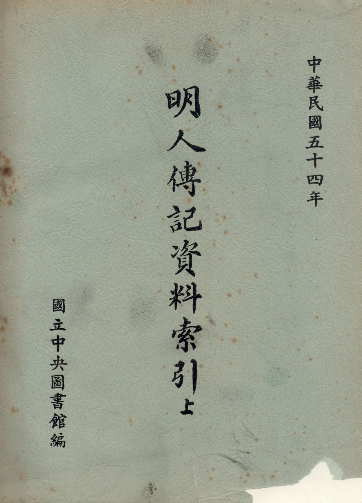

論著
昌彼得先生於一生中完成許多鉅作，在版本目錄學領域上貢獻極大，其多項論著皆為圖書文獻學界中的重要參考工具書，作品涵蓋範圍深且廣，擁有多個知名著述，例如《說郛考》、《中國圖書史略》、《中國目錄學講義》、《圖書版本學要略》、《版本目錄學叢論》等等（昌彼得、馮明珠，2009）。
以下為部分論著之書影。



昌彼得先生於古籍整理有諸多貢獻，不僅編印收藏目錄以及專門目錄，建構版本鑑定學之架構，也推動複印與出版工作，將珍稀資源廣泛流傳以供世人取用。本文以古籍整理為綱，對昌先生之生平、事功、論著及其於學術界之影響進行介紹。
昌彼得先生的一生經歷北伐、抗戰、戡亂，見證臺灣由貧窮進入小康，再由小康而富庶，又逐漸停滯而衰退的過程，他豐富的生平或許還能為修史者們提供線索。
民國十年（1921），昌先生出生於中國湖北，自號「宗陶老人」，本名瑞卿，因幼時被過繼到教會家庭，父母親俱篤信基督教，他受嬰兒洗得教名為彼得，因此一直沿用「昌彼得」這一名稱，但昌先生本人其實是無神論者。昌先生的童年在順性發展中愉快地度過，他個性活潑貪玩，街道巷弄裡的鄰居小孩全是他的玩伴，每天無拘無束地一起跳房子、踢毽子、打彈珠等。此外昌先生從小便喜歡看歷史演義故事，把零用錢都用來租連環圖畫娃娃書，從《武王伐紂》、《東周列國志》、《隋唐演義》……到《八國聯軍》等故事都有看過，因此他還未上學就已認得不少字。
小學和初中時期，昌彼得先生喜玩樂，學業並不好，會抽煙、賭錢和作弊，初二還曾留過級，他自評「留級，對我的一生有重大的影響」、「這一年的留級，不但改變了我讀書的態度，也開拓了我未來的前途」，由此明白到作弊並不可恃，讀書還是要自己用功最為可靠的，因此重讀後用功了許多。 抗日戰爭時期開始時正值昌先生初三，戰爭的爆發讓大家的生活都漸漸變得艱難起來，其後他進入高中後發現了自己的興趣在政治或歷史方面，克苦學習，畢業會考更得了乙組（文組）首名，獲保送國立中央大學歷史學系，實屬優異。在中大四年，拓展了昌先生的學術視野，也讓他懂得許多為人處世的道理。
畢業後昌彼得先生進入國立中央圖書館服務，主編纂史籍考，其後中圖遷館南京，接收了大量古籍，他亦被調往特藏組，由此開始了與善本圖書的緣分。昌先生最初對整理古籍編目一竅不通，還萌生過辭職的念頭，幸得特藏組內兩位老先生的鼓勵和教導，他也用心學習，不恥下問，後來成長到對於版本的鑒定能有自己一套的見解，得到了主任的青睞，昌先生的認真和勤奮讓人欣賞，而這也奠定了後來他能成為押運員把第一批善本運臺的基礎（昌彼得，2008）。
民國三十八年，國共戰爭形勢變化許多，中圖欲把善本文物遷臺，昌先生為奉命押運善本古籍一同來臺。來臺後，他更專注詳研善本，敏而好學，考經據典把套色印刷技術的起始年代往前推前二百餘年。在民國四十三年，更升任為特藏組主任。中圖任期間，昌先生編製了多本圖錄和書目，更方便讀者查檢取用，也撰出多本篤實嚴謹的著作，如《明人資料傳記索引》、《說郛考》等（昌彼得，2009）。
民國五十四年至民國八十九年，昌彼得先生同時兼任臺大、東海、東吳、輔仁、淡江等大學之教授，講授圖書文獻學的相關課程，桃李滿門（沈津等人，2011）。
民國五十九年，受館長蔣復璁之請，專任為故宮博物院圖書文獻處處長。期間，故宮歷四次擴建和修善工程，昌先生皆悉心安排和協助，同時又擴大海內外學術文物的交流，積極推動四庫學的發展，主編《圖書季刊》，更在七十二年編印《故宮博物院善本舊籍總目》，打破善本和一般書籍的編目藩籬。後於民國七十三年，升任故宮博物院副院長，民國八十九年榮退。卒於民國一百年（沈津等人，2011）。
在中圖近二十五年和故宮博物院近三十年的時光，昌彼得先生不僅著作等身，亦教書育人，為人重情，豪俠仗義，知交桃李滿天下，給圖書文獻學界貢獻良多，讓人敬佩。
昌先生一生成就諸多事蹟，不管是對於其就職單位、版本目錄學及文獻學皆有相當大的貢獻，在退休後也持續關注著學術界的發展，並提供了一些發展建議。藍文欽先生於《記瑞卿師二、三事》中以一句話簡要的概括昌先生一生的事功：前半在圖書館，後半在博物館。昌先生於自敘《病塌憶往—宗陶老人自述》中也著重於這個面向的描述。
昌先生於中圖服務近二十五年，於國共內戰時，昌先生擔任押運員，將中央圖書館文物奉命運臺，抵臺後駐守霧峰北溝，以守護善本古籍為己任，不曾因任何刁難而動搖離職。在其國圖的就職生涯中，參與了諸多版本鑑定與編目之作業，為後續編目修訂工作奠定良好基礎。又於某會議中建議將正、別史合為紀傳類，與編年、紀事本末皆依史著的體裁來分類，獲得與會同仁一致贊同，後在台出版的中館善本與普通本書目都依此類例進行，也獲得他館的沿用（昌彼得，2010）。
此外，在復館至遷書期間，是昌先生研究的黃金時期，此段時間昌先生鎮日浸淫於善本書中，閱覽了無數書籍，並主編了《明人傳記資料索引》，後續編制的《宋人傳記資料索引》、《元人資料傳記索引》依照此書之體例。完成《說郛考》、《明藩刻書考》等著作，考證陶宗儀的生平與傳記，以及改正明史錯誤，完成了諸多大作。
《說郛》，為元末大儒陶宗儀纂輯歷朝雜史傳記、稗官小說諸書而成，因陶氏所處年代，多見異本，此書甚受後人重視。明代以來，此書經郁文博及明末人士之竄亂重編，已失原貌，傳世亦頗有異同。清朝時期，從事《說郛》之研究者鮮少，且作品因未刻而文稿散佚。民國時期，各國有學者進行相關研究。昌先生也在考訂遷台善本書籍時，對《說郛》一書版本錯縱複雜而感興趣，因而撰寫《說郛考》（潘美月，2005）。《說郛考》分上下兩篇，上篇為源流考，分十二章，下篇為書目考，先生將《說郛》收錄之書目七百餘種，加以考訂，每書考其源流存佚，略述著者生平及流傳版本。觀看此書，可實際感受到昌先生治學篤實謹嚴，蒐集資料不遺餘力之精神。
昌先生也將國圖收藏的諸多明代附圖典籍，挑選明代極盛時期版畫十四種，加上介紹、口錄，編印出版，為傳播藝術文化產生巨大貢獻。昌先生並在出國參加討論會的同時，向美國大使館申請補助，順道至美國、日本收藏中國善本較多的大學圖書館參訪，了解其收藏，以作為日後編輯世界收藏中國善本聯合書目之用。
昌先生為故宮善本古籍搜集、整理、典藏有著相當的貢獻，當中不得不提到沈仲壽氏捐贈的書籍。沈氏自先祖廣收群書，累藏宋元明珍本數千冊，藏於上海故居「研易樓」。民三十八年時將所藏珍本護運來臺，部分古籍隨太平輪沉沒，僅存千餘冊。民六十九年，沈氏年事已高，深感守書不易，擬將藏書捐贈給公家機構。時任故宮圖書文獻處處長的昌先生遂前往拜訪，言談甚歡，沈氏欣然同意將所藏捐贈給故宮博物院，計一千一百六十九冊。後先生考訂這些書籍，發現其中多部書籍為海內孤本，為有效發揮珍本祕笈之學術功能，建議將其中幾部納入該院影印善本圖書中，並加以考訂各書版刻源流及優劣異同，以饗讀者。後續更與圖書文獻處的諸多同仁一起將這批書一一考編，撰寫書志，附上書影，編成《國立故宮博物院沈氏研易樓善本圖錄》出版（陳仕華，2005）。
昌先生於任職故宮圖書文獻處期間，也持續進行編目作業，為學術研究者提供工具書使用，如提倡編纂《四庫全書索引叢刊》，包含四種索引，分別為：《遼金元三史國語解索引》、《四庫全書文集編目分類索引》、《四庫全書傳記資料索引》、《四庫全書藝術分類索引》，改善原先全書在資料的提供利用與研究不便之事，使《四庫全書》更能發揮其價值（陳仕華，2005）。同時昌先生鑒於圖書文獻處雖對外開放，但鮮少外界人士前來，只有零星的院中同仁來查資料，為了推廣圖書文獻處，使更多人前往使用此單位收藏之典籍，又與臺北文海出版社商洽，辦理了圖書季刊，年餘之後，又辦了份文獻季刊。從昌先生的諸多事蹟，可見昌先生對其就職單位的盡心奉獻，以及為文化傳承與宣揚所付出的巨大貢獻。
在版本目錄學、文獻學上，昌先生更是有諸多貢獻。昌先生透過研究與文獻佐證，將中國朱墨印刷術的歷史向上推兩百多年。由昌先生編纂的《故宮博物院善本舊籍總目》，在古籍編目方面多有創新，為台灣最為權威的善本書目之一，影響深遠。《故宮博物院善本舊籍書目》打破善本與普通古籍分印編目的成規，一一覆核原書，補闕匡謬，並在改良傳統的四部分類法之外，另採用互著、獨裁編目的方法，可見先生於此領域上的深厚功底。此外，昌先生所撰寫的解題、敘錄或書志，將版本、目錄融為一體的體例開創了書志題識目錄的新體制（毛建軍，2018）。
昌先生與屈萬里先生合著的《圖書版本學要略》，將版本的知識有系統地建構成一門新興學科——圖書版本學，並充分的確立這門學科的內涵與研究體系。除編目工作外，昌先生也至諸多大學授課，開設了「目錄學」、「文獻學」等課程，帶領學生步入「目錄學」的研究領域，造就了一大批臺灣與韓國的文獻學學者，讓目錄學這門學科能持續傳承下去。
昌彼得先生於一生中完成許多鉅作，在版本目錄學領域上貢獻極大，其多項論著皆為圖書文獻學界中的重要參考工具書，作品涵蓋範圍深且廣，擁有多個知名著述，例如《說郛考》、《中國圖書史略》、《中國目錄學講義》、《圖書版本學要略》、《版本目錄學叢論》等等（昌彼得、馮明珠，2009）。
以下為部分論著之書影。
昌彼得先生自青年時便投身於圖書文獻界，以典守善本古籍為己志，直至雪鬢霜鬟仍盡心於學界，關懷著學術界及其曾就職機構的發展，閱歷豐富，經手過的善本古籍難計其數。自民國三十八年因戰亂奉命押運善本古籍來臺後，昌先生更深入研究這些珍稀文獻，持續學習、挖掘、考據，不僅熟於版本目錄之流變，精於版本鑑定之學問，更透過長年的實作、考究，於古籍編目、鑑定以及版本目錄學方面屢有創新。
昌先生不僅忠於職守，進行版本鑑定與編目之工作，也積極推廣所藏文獻之取用與研究。昌先生以創新之方式考訂善本書目、編纂書目索引、精印再版古籍文獻，將重要資產進行統整、彙編，使諸多珍稀資源得以更完善地保留下來，能被更多樣化、完善地利用。
昌先生深耕臺灣所藏之善本古籍，同時也十分關心位於其他地區的中國珍藏文獻。像是北平圖書館寄存於美國國會圖書館的善本珍藏，因該批古籍有書目不完整的爭議，昌先生一直掛心於此，期盼能核對確認是否有遺漏的書目，並追查散佚在外的書目下落，由此可見昌先生對於文化遺產的重視（昌彼得，2002）。
昌先生筆耕多年，考掘故知並開創新學，將自身學識化為形體發揚遠傳，多項論著皆為圖書文獻學界中的重要參考工具書。先生勤於提攜後進，於國內多個學府中執教鞭，孕育出多位文獻學學者，使學科知識得以傳承並持續開展。
昌彼得先生長年深耕於圖書文獻學界，關懷歷史文化資產，在版本目錄學及文獻學中開拓出更廣闊的道路，昌先生多項創新之舉，為古籍整理事業帶來深遠的影響。